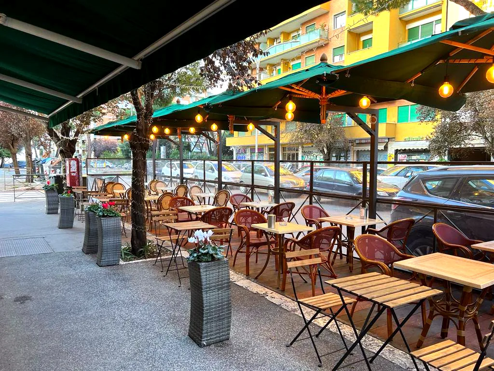

Dove siamo
Zona Ostiense – San Paolo, a circa 5 minuti a piedi dalla metro B Basilica San Paolo.
Dove siamo
Via Gabriello Chiabrera 129, Ostiense – San Paolo
Orari di oggi
| Lunedì | 6:30 – 15:30 |
|---|---|
| Martedì | 6:30 – 21:30 |
| Mercoledì | 6:30 – 21:30 |
| Giovedì | 6:30 – 21:30 |
| Venerdì | 6:30 – 21:30 |
| Sabato | 6:30 – 21:30 |
| Domenica | 6:30 – 21:30 |
- Cinema Madison accanto a noi, al civico 121
- Metro B Basilica San Paolo a circa 5 minuti a piedi
- Basilica di San Paolo fuori le Mura a circa 10 minuti a piedi

Via Gabriello Chiabrera 129
00145 Roma
In metro
Linea B, fermata Basilica San Paolo: circa 5 minuti a piedi.
A piedi
Dalla Basilica di San Paolo fuori le Mura sono circa 10 minuti.
Per riconoscerci
La veranda con le tende verdi, accanto al Cinema Madison.